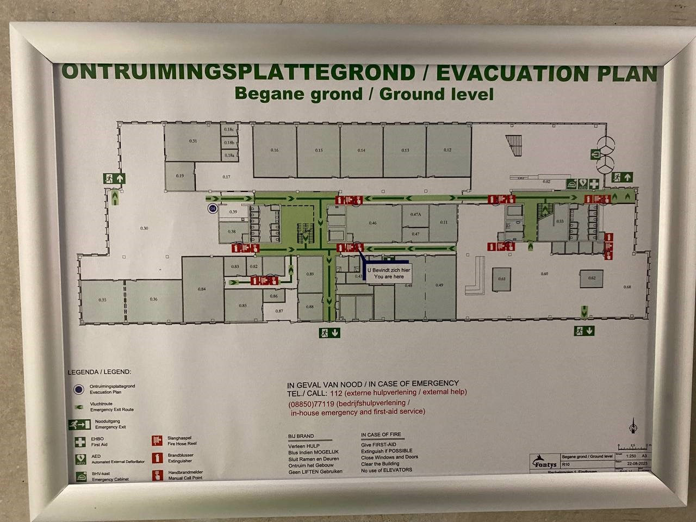
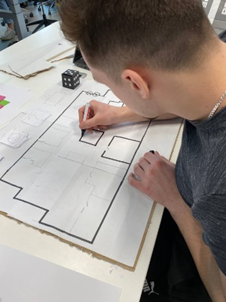
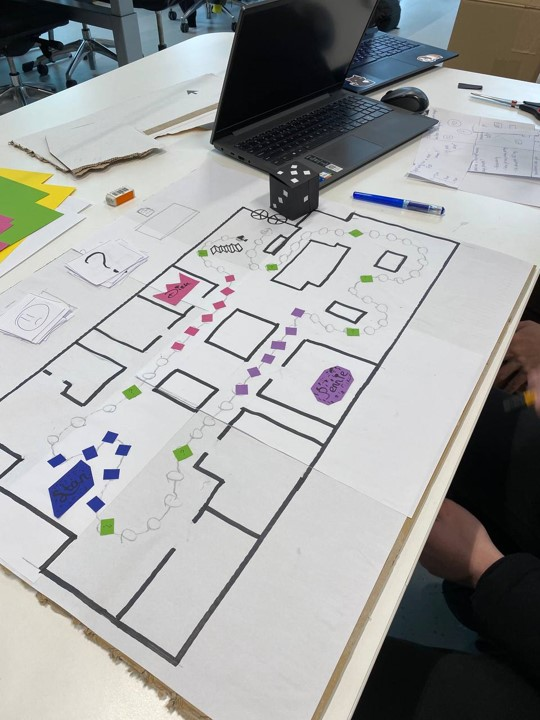
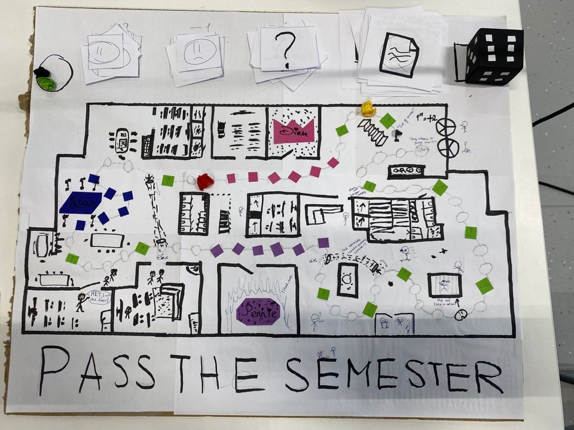
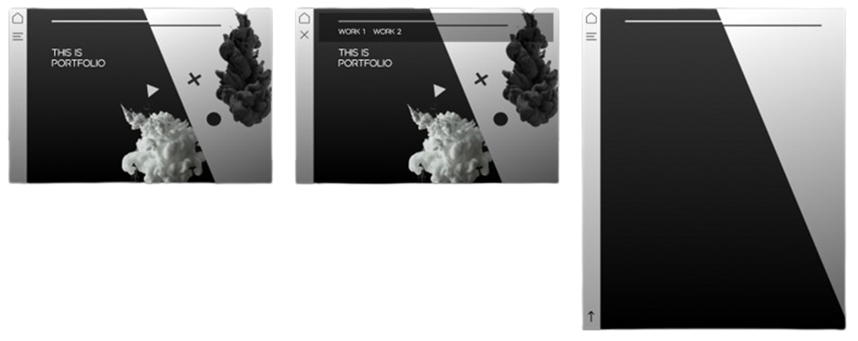

Interactive Media Products
Intro Week Board Game
During the intro week, our assignment was to create a paper prototype for a unique game. After brainstorming, we developed the idea of a board game called "Pass the Semester," based on the Fontys floor map.
   The objective of the game is to accumulate points to pass with flying colors. Players race to the finish for 2 points or earn Feedpulse points by answering media-related questions on the colored squares of the teachers. Correct answers gain 2 points, while incorrect ones deduct 1 point. The game features special elements such as teleporters for shortcuts, green squares for unique challenges, and even a jail that detains players for a round. Have fun and try to pass the semester!
Portfolio Design
I aimed for a simple and clean look for my website. Black is my favorite color, and I drew inspiration from designs on the internet. I designed the website on Figma and decided to split the page with black and white sections and added underwater paint clouds for a unique touch. Elements like lines and shapes connect the two sides. The left side features a bar with a home button and a menu button to access other pages. I faded the page to make it lighter at the top.
Website Development for Geldrops Muziek Corps
In the final stages of our media development for Geldrops Muziek Corps, we focused on improving the visual appeal and functionality of their website. We chose Wix for its user-friendly customization options and created a prototype in Figma, using Geldrop's flag colors as inspiration. Flowing lines representing music were added for aesthetics. We disigned the Website on Figma and later I translated the it into a functional website on Wix, ensuring compatibility with smartphones to attract more users.
Homepage on Figma:

Homepage on Wix:

The homepage features a group picture of all GMC members and a simple navigation bar with buttons for different pages and sign-up options. We made the sign-up buttons stand out with colors to attract potential new members. Scrolling down, visitors find a quick introduction to GMC and upcoming events. At the bottom, there are pictures and sponsor acknowledgments. Other pages include information about GMC's groups, music education, and sponsorship opportunities. For inquiries or joining, visitors can easily click the "Get in Touch" button to find contact details and location information. By focusing on user-friendly design and clear communication, we've improved GMC's online presence and made it easier for visitors to connect with them.